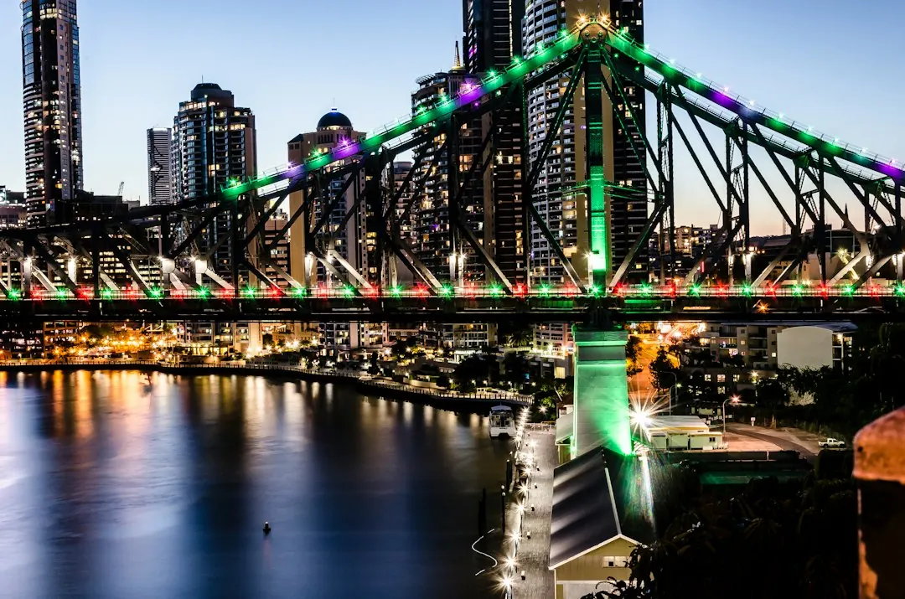

Website projects in Brisbane vary by scope. A small business brochure site commonly costs about $2,500 to $7,500, while a more polished lead-focused build is closer to $7,500 to $15,000. WordPress or small business builds commonly take 6 to 10 weeks, simple brochure sites about 4 to 10 weeks, and custom or eCommerce projects from roughly 12 weeks to several months. Content and feedback can affect the schedule, so confirm responsibilities before work begins.
For businesses comparing web design brisbane options, the practical decision is to match platform, page purpose, budget and content readiness before requesting a detailed proposal.
Web Design Brisbane Explained
For the published project guidance, see Web Design Brisbane Australia. Its approach frames the project around the customers a business wants to reach and the enquiries it wants to generate. That is a useful starting point before choosing a platform. Write down whether the site needs to explain a service, collect leads, support a campaign, sell products or replace an ageing website.
A small business website may need clear service pages, contact details and an editable content system. A campaign landing page has a narrower task, while an online store needs product presentation, trust-building information and a buying path. A redesign also has an additional brief: preserve useful search visibility while improving the experience.
Before requesting prices, prepare the core inputs:
- the services or products that deserve their own pages
- the Brisbane or South East Queensland customers being targeted
- existing branding, photography, copy and domain access
- the enquiry, booking or purchase action the site should support
Choose a format that matches the workload
Platform choice should follow how often the site will change and who will maintain it. WordPress is presented as an editable option for a business or team that wants to update text, images and pages. A custom build can be shaped more closely around a business, but usually requires a clearer scope. Shopify and WooCommerce are identified as store options for businesses selling online.
Ask what is included in the chosen format, including page templates, mobile layouts, forms, analytics, content entry, training and post-launch support. Ownership also deserves a direct question. The published guidance says the website and domain remain with the customer, and that training can be provided for self-managed updates.
For a redesign, request a before-and-after plan for existing pages, redirects and important search traffic. For a new site, ask how the page structure will support future service pages rather than treating launch as the end of the project.
Read the price range as a scope signal
Published Brisbane guidance gives a small business brochure website a common range of about $2,500 to $7,500. A more polished, lead-focused build is placed closer to $7,500 to $15,000. eCommerce and heavily customised work start higher. These are indicative figures, not a quote for a particular business.
The useful comparison is what each proposal includes. Check the number and type of pages, copywriting responsibility, photography, revisions, forms, integrations, hosting, accessibility work, technical SEO, training and maintenance. A lower initial figure may exclude content preparation or ongoing care, while a higher figure may reflect strategy and custom functionality.
Use a written scope to separate launch essentials from later improvements. That makes competing proposals easier to assess and gives the business a clear decision if the budget changes.
Plan around content and review time
Simple brochure sites are commonly described as taking about 4 to 10 weeks. WordPress or small business sites are commonly around 6 to 10 weeks. eCommerce or custom builds may take from about 12 weeks to several months. The stated timelines depend heavily on how quickly content and feedback are supplied.
That dependency should shape the internal schedule. Nominate one person to gather approvals, settle service wording and return consolidated feedback. Prepare product information, images and legal or contact details before design work reaches its final stage. Ask when the site needs content, who tests forms and how revisions are counted.
Businesses in different parts of Brisbane may serve different audiences, but locality should be reflected through genuine service information and customer needs, not a long list of place names. A page for a Fortitude Valley creative business may need a different message from one serving Sunnybank customers, even when both use the same platform.
Check the build before launch and after it
A search-ready site is described as mobile-first, fast and built on clean technical foundations. That does not guarantee a particular ranking. The published guidance also notes that ongoing results depend on competition and content, and that no one can honestly guarantee a specific position under Australian Consumer Law.
Before launch, test the site on a phone, complete every enquiry form, check links, review page titles and confirm that key service pages are easy to reach. Ask who handles backups, security, updates and support once the project is live. A care plan may cover those tasks, while a trained owner may prefer to manage routine edits.
For an independent comparison of project planning, the Brisbane website planning guide provides another reference point. The next practical action is to prepare the brief, gather the content and request an itemised scope with indicative timing.
- Define the outcome. Record whether the website must generate enquiries, explain services, support a campaign, sell products or replace an older site.
- Prepare the inputs. Collect page topics, customer information, branding, images, copy, domain access and the preferred contact or purchase action.
- Compare itemised scopes. Ask each provider to separate pages, platform, content work, revisions, integrations, training, support and ongoing care.
- Set the review schedule. Nominate an approver, return consolidated feedback and confirm who tests forms, mobile layouts and important links before launch.
| Project need | Suitable direction | Indicative timing or cost |
|---|---|---|
| Small brochure site | Clear information and enquiries | About $2,500 to $7,500, commonly 4 to 10 weeks |
| Lead-focused business site | More polished conversion path and service detail | About $7,500 to $15,000, commonly 6 to 10 weeks |
| eCommerce or custom build | Online selling or heavily tailored functionality | Starts higher, from about 12 weeks to several months |
Common questions
How much does a small business website commonly cost in Brisbane? The supplied guidance places a small business brochure website at about $2,500 to $7,500. A more polished, lead-focused build is closer to $7,500 to $15,000, while eCommerce and heavily custom work start higher.
How long does a typical website project take? A simple brochure site is commonly about 4 to 10 weeks, and a WordPress or small business site about 6 to 10 weeks. Custom or eCommerce work may take from about 12 weeks to several months.
Can a business update its own website? Yes, editable platforms such as WordPress can allow a business or team to change text, images and pages. Ask about training, access and whether a care plan is available for updates.
Does a well-built website guarantee Google rankings? No. Mobile-first structure, fast loading and sensible on-page SEO can support search readiness, but ongoing results also depend on competition and content. A specific position cannot honestly be guaranteed.
This guide covers website formats, indicative costs, project timing, content preparation and practical launch checks for Brisbane businesses.